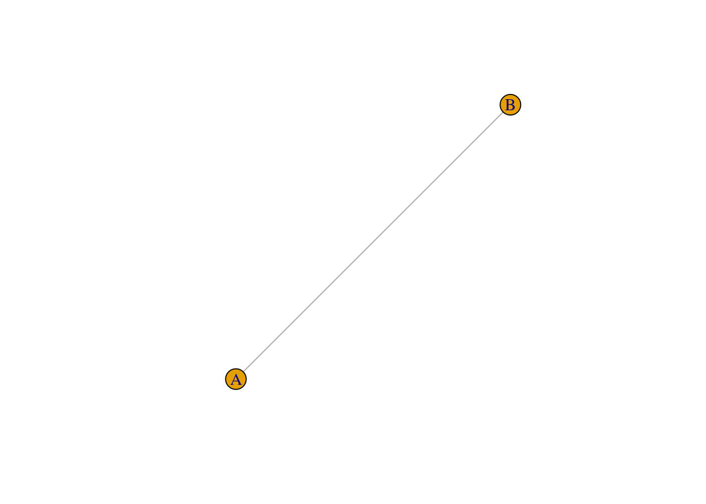

Chapter 1 Chapter 1: Installation and set up
1.1 Installing R and RStudio
Before we can get started with network analysis, we need to prepare a computing environment for doing so. We will analyze networks using the igraph R package, and so the very first step is to install both R and RStudio into the device that you wish to use for network analysis. It is important to note that R and RStudio are two different things that you have to install. R is the programming language itself (like Python or C++) whereas RStudio is the software application that we will use to interact with R. RStudio is known as an integrated development environment (other examples of IDEs are Visual Studio and PyCharm).
First, install R from https://www.r-project.org/. Note that you will have to choose a CRAN mirror that you wish to download R from - which one you pick does not matter. Since I am based in Singapore I typically choose one from nearby regions (Taiwan, Korea, Japan, Indonesia, or Worldwide). Download the latest version.
Then, install RStudio from https://posit.co/. Download the correct RStudio Desktop for your computer OS. (https://posit.co/download/rstudio-desktop/)
Note that both R and RStudio are free downloads. You should not need to pay for anything.
1.2 RStudio Cloud
If you do not have a computer/laptop that you are able to install programs on, you can try using RStudio in the cloud. Basically, you can run RStudio on the internet without downloading anything into your computer.
The main consideration is that the free version has a cap on usage. Below is reproduced from their website (https://posit.cloud/plans/free):
“Compute hours represent how much time a project is open or running with a particular configuration, computed as (RAM + CPUs allocated) / 2 x hours. For example, working with a project for 1 hour with 1 GB of RAM and 1 CPU allocated consumes 1 project hour. The Cloud Free plan has a cap each month of 25 project hours. Once you reach the cap, you can no longer open or create projects during your current month.”
1.3 Installing R packages
Now that you have R and RStudio set up, let’s try to install the R packages that we will use in this book. First, what is a “R package”? Sometimes they are known as libraries, but you can think of packages/libraries as a collection of R functions that do specialized things. Because we make use of several functions from the igraph package to do network analysis, we need to first download igraph.
To download igraph, open RStudio and type the following into your Console (the panel with the “>” symbol - this is where you type in instructions for R to execute).
Be patient and wait for the package to finish downloading. After it is downloaded, we can only start using the functions in igraph after we have loaded the library into our workspace. To do this, type the following into the Console:
If everything is working fine, you should see a plot of two connected nodes when you run the following line of code in the Console:

Important! You only need to install a package ONCE (unless you wish to update it). But you will always need to load the package at the start of the R session (i.e., run library(igraph) in the Console whenever you open RStudio) so that you can use these special network functions.
1.3.1 Exercise
Try installing the package called
tidyverse.tidyverseis a powerful set of packages that enable people to do cool data science things in R. It is highly recommended to learn it if you are interested in becoming a proficient user of R. See https://www.tidyverse.org/ for more information.You know if you have succeeded if you are able to load
tidyverseinto your workspace. What is the code needed to do this?